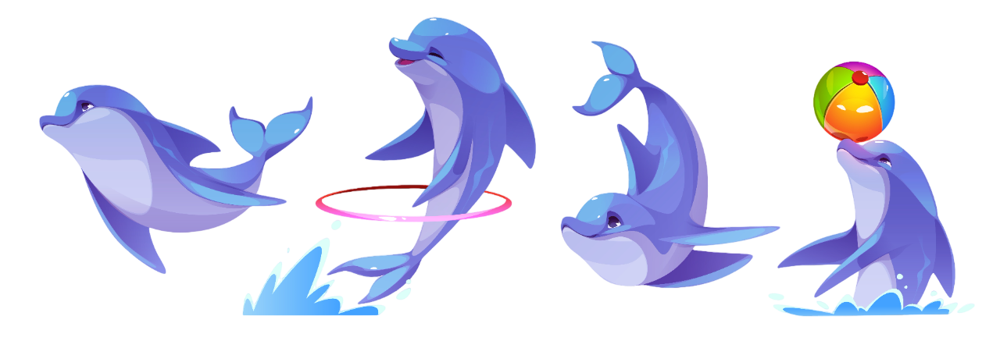

Golfinhos: os sorrisos do mar 🐬
Os golfinhos são animais superinteligentes e brincalhões que vivem em grupos no oceano. Eles se comunicam com
sons especiais e até têm um “nome” próprio! Usam o som para se localizar e encontrar comida como peixes e lulas.
Amam nadar, saltar e interagir com humanos — alguns até salvam pessoas no mar! Mas, apesar de encantadores,
enfrentam perigos como a poluição e redes de pesca. Por isso, cuidar dos oceanos também é cuidar deles!

Cada golfinho tem um assobio único, como se fosse o próprio nome!